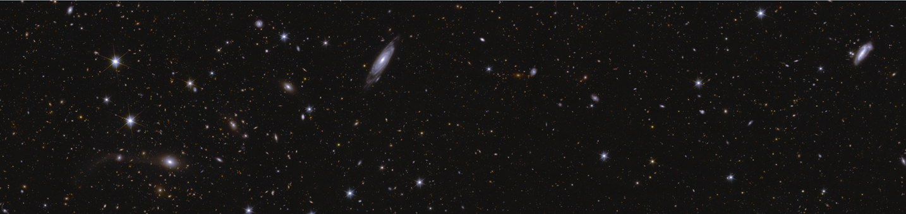
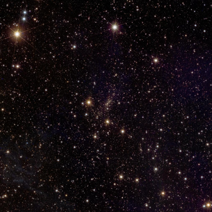
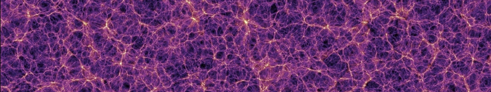
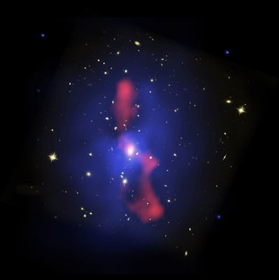

Last update: 05/09/2026; Passa alla versione originale in inglese.

L'obiettivo di queste quattro brevi lezioni è consentire ai non esperti di raggiungere un livello di conoscenza tale da apprezzare e comprendere un argomento di ricerca astrofisica all'avanguardia.
Per fare ciò, dovremo partire dalle basi della cosmologia: presenterò una panoramica storica di come la comunità scientifica ha compreso il modo in cui si formano le galassie; perché osserviamo che le galassie non sono distribuite in modo casuale nel cielo, ma si trovano in gruppi (i cosiddetti ammassi di galassie, o cluster); e perché gli ammassi di galassie emettono radiazioni in varie lunghezze d'onda (dall'ottico ai raggi X); vedremo come gli scienziati utilizzano queste informazioni per ricavare sempre più dati sulla cosmologia del nostro Universo.
Rivedremo anche la controparte teorica delle osservazioni: le simulazioni numeriche come strumento per interpretare la grande quantità di dati osservativi.
Infine, avremo tutte le conoscenze di base per apprezzare e comprendere un particolare argomento scientifico all'avanguardia: come tracciare l'origine dei cosiddetti ammassi di galassie deboli ai raggi X possa aiutare a far avanzare i futuri studi di cosmologia.
Riepilogo della lezione I: panoramica storica
La prima lezione della serie esaminerà gli ingredienti fondamentali dal Big Bang alla formazione degli ammassi di galassie oltre al motivo per cui le galassie si raggruppano in ciò che chiamiamo ammassi di galassie: essi sono le strutture più massicce e legate gravitazionalmente del nostro Universo. Hanno raggi giganteschi dell'ordine di circa 1 mega parsec (Mpc); emettono sia luce ottica sia radiazione X; vedremo come interpretare queste osservazioni utilizzando modelli teorici come le simulazioni numeriche e come estrarre informazioni sulla cosmologia sottostante che governa il nostro Universo contando gli ammassi di galassie nel cielo.
Questo è un argomento molto complesso e, dal punto di vista di un non esperto, può sembrare quasi una magia il modo in cui la comunità astrofisica sia arrivata a una conoscenza così dettagliata semplicemente osservando il tutto dal nostro pianeta Terra. Tuttavia, gli astrofisici non hanno costruito questo enorme bagaglio di conoscenze in modo lineare e semplice: ci è voluto più di un secolo per districare lentamente tutte le osservazioni enigmatiche e le possibili soluzioni. Pertanto la prima lezione è strutturata con un approccio storico: per capire come l'umanità sia riuscita a progredire lentamente su un argomento così complesso.
Come si osservano gli ammassi di galassie?

Si potrebbe ingenuamente pensare che le galassie nel nostro Universo siano sparse e distribuite in modo casuale. Tuttavia, prendiamo questa recente immagine del telescopio Euclid, dove ogni punto qui è una galassia molto distante : se guardiamo la parte centrale dell'immagine, possiamo vedere che lì i punti non sono disposti a caso, ma sembrano essere leggermente raggruppati insieme. In effetti, l'Universo osservabile contiene moltissime galassie sotto forma di gruppi e ammassi.
Lo studio di questi cosiddetti ammassi di galassie è fondamentale per lo studio della cosmologia, e nell'ultimo secolo abbiamo sviluppato il quadro teorico per comprendere perché si raggruppano (in breve: a causa dell'attrazione gravitazionale) e per prevedere numericamente (in media) il numero di ammassi atteso per un dato modello cosmologico. Trovare questi ammassi non è un compito facile, quindi la comunità ha sviluppato algoritmi sofisticati per riconoscere gli ammassi di galassie in immagini di grandi dimensioni (ad es. AMICO di Bellagamba et al. 2017).
Riepilogo delle lezioni II e III: simulazioni numeriche

Per interpretare al meglio le immagini dei telescopi e la grande quantità di dati che estrapoliamo da esse, gli scienziati usano spesso le cosiddette simulazioni numeriche. La seconda lezione presenta come funzionano queste simulazioni al computer. Le simulazioni cosmologiche iniziano con l'ipotesi di una distribuzione iniziale di materia del nostro Universo primordiale e quasi omogenea; applicano poi le leggi della fisica (principalmente la gravità) per consentire alle piccole fluttuazioni di crescere man mano che la gravità fa sì che attraggano il materiale circostante, rendendole sempre più dense. Queste simulazioni richiedono una risoluzione sufficientemente elevata da risolvere il centro stesso dei nuclei degli ammassi di galassie (0,01-0,02 Mpc) e al tempo stesso coprire volumi su scala cosmologica di almeno 300-400 Mpc.
Per capire quanto siano impegnativi questi numeri, tra 0,01 Mpc e 400 Mpc ci sono quasi 5 zeri di differenza: questo è paragonabile alla dimensione di una singola persona in uno stadio di calcio o alla durata di un singolo giorno in un arco temporale di 270 anni. Per essere in grado di simulare questi valori di risoluzione estremamente complessi, queste simulazioni richiedono requisiti enormi di memoria e CPU. Devono essere eseguite su centinaia di computer che lavorano in parallelo nei cosiddetti cluster di calcolo (i più moderni richiedono centinaia di TB di RAM e di archiviazione fisica).
L'immagine qui sopra è prodotta da una delle più importanti simulazioni cosmologiche mai realizzate, la cosiddetta simulazione Millennium, prodotta nei primi anni 2000 da Volker Springel e dal Virgo Consortium, che era impressionante per le dimensioni di quegli anni: essa segue l'evoluzione di 10 miliardi di particelle (ciascuna con il suo array 3D di posizioni e velocità). Le loro posizioni e velocità iniziali provengono da una griglia quasi omogenea (con un piccolo spostamento per distribuire i punti secondo un presunto spettro di potenza iniziale misurato dalle osservazioni del fondo cosmico a microonde, CMB) e poi fatte evolvere con la gravità newtoniana fino all'età attuale dell'Universo.
I risultati di queste simulazioni mostrano la formazione della cosiddetta ragnatela cosmica (cosmic web): sebbene la materia nell'Universo sia iniziata come omogenea, man mano che l'Universo evolve, a scale inferiori a 50-100 Mpc diventa sempre più disomogenea grazie alla gravità: presenta vuoti, pareti e filamenti, i cui nodi sono gli aloni che ospitano gli ammassi di galassie più massicci.
Facciamo un esempio di come le simulazioni potrebbero essere utilizzate praticamente per interpretare meglio le osservazioni. La densità media di materia del nostro Universo non è nota con un'ottima precisione, poiché diverse survey osservative ricavano valori relativamente differenti ( vedi report del Dark Energy Spectroscopic Instrument, DESI). Per risolvere questo problema, si potrebbero eseguire molte simulazioni numeriche, ciascuna ipotizzando una diversa densità media di materia del nostro Universo. Quindi si analizzerebbero i risultati delle simulazioni alla ricerca di differenze significative tra di esse (ad esempio, simulazioni eseguite con parametri cosmologici diversi potrebbero portare all'osservazione di un numero minore o maggiore di ammassi di galassie).
Per interpretare al meglio queste discrepanze servono simulazioni in grado di riprodurre estremamente bene la distribuzione di stelle e gas all'interno degli ammassi di galassie, in modo da predirne rispettivamente l'emissione ottica e ai raggi X. Pertanto, la terza lezione esamina come le simulazioni numeriche possano tenere conto del gas che forma le stelle, delle stelle che possono esplodere e arricchire il gas circostante con nuovi elementi, di come le tecniche di simulazione modellino la formazione dei buchi neri supermassicci e di come modellino i potenti getti che essi possono emettere.
Riepilogo della lezione IV: ammassi di galassie deboli ai raggi X
Infine, la quarta lezione indaga un argomento all'avanguardia nell'astrofisica: un piccolo tassello del puzzle molto più grande incentrato sul porre vincoli alla cosmologia del nostro Universo. In particolare esamineremo perché l'emissione di raggi X di alcuni ammassi di galassie è molto debole (come pubblicato in Ragagnin et al. 2022).
Questo è importante perché il conteggio del numero di ammassi è difficile e gli studi osservativi devono modellare correttamente i possibili oggetti deboli ai raggi X mancanti. Pertanto è importante anche sapere che tipo di oggetti si rischia eventualmente di perdere.
Le simulazioni numeriche sono uno strumento fantastico per risolvere questi problemi: partono da una distribuzione omogenea di materia e, man mano che la simulazione al computer prosegue, troviamo "magicamente" filamenti e ammassi che si formano grazie al fatto che crescono attraendo la materia circostante. All'interno di questi "gemelli digitali" dei nostri Universi, possiamo cercare gli ammassi e sezionare le loro componenti gassose e stellari: possiamo tracciarli nel tempo o ri-simularli con una fisica diversa per comprendere l'impronta di uno specifico meccanismo fisico sulle proprietà degli ammassi di galassie (ad esempio, potremmo ri-simulare un ammasso con o senza la formazione di buchi neri supermassicci e vedere come questo influisca sul gas circostante). Le analisi sui dati simulati mostrano che, almeno nelle nostre simulazioni, gli ammassi deboli ai raggi X tendono ad essere vecchi.
Sì, ha senso parlare di "età" di un ammasso di galassie, e questo può essere giovane o vecchio a seconda di quanti miliardi di anni fa si è formato: ammassi più piccoli si muovono nei filamenti e fluiscono nei nodi vicini, spesso "scontrandosi" l'uno con l'altro, fondendosi così (merging) insieme e diventando un nuovo ammasso di galassie più massiccio.
Esiste un'ipotesi convincente sul perché gli aloni deboli ai raggi X siano più vecchi: e se negli ammassi di galassie vecchi un buco nero centrale avesse (in media) deprivato l'ammasso del suo gas? Sebbene un buco nero sia trascurabilmente piccolo rispetto a un ammasso di galassie, il gas che cade verso il buco nero, contrariamente alle aspettative comuni, non necessariamente vi entra, ma può venire espulso dall'ammasso di galassie stesso.

L'immagine qui a sinistra è una sovrapposizione di varie osservazioni dell'ammasso di galassie: luce visibile dal telescopio Hubble (l'ammasso di galassie è così distante che ogni punto giallo è una galassia come la nostra Via Lattea), e raggi X dal telescopio Chandra (in rosso-blu); si noti come il gigantesco getto rosso possa essere così enorme da coprire una distanza talmente lunga da superare persino la separazione spaziale di varie galassie: partendo dal centro dell'ammasso, ci sono situazioni come quella nella foto in cui può raggiungere la sua estremità finale. Ecco quanto possono essere potenti i getti dei buchi neri supermassicci.
Le simulazioni suggeriscono anche che gli ammassi di galassie vecchi tendono ad essere morfologicamente più rotondi rispetto a quelli giovani (questi ultimi si sono appena formati e ci vuole tempo prima che il gas si termalizzi). In conclusione, caratterizzare l'origine degli ammassi di galassie deboli ai raggi X può aiutare gli studi osservativi a modellare meglio questi oggetti poco risolti o mancanti.
Lezioni
(lavori in corso)
- Dal Big Bang agli ammassi di galassie: una panoramica storica
- Le simulazioni numeriche come controparte per interpretare le osservazioni
- Simulare la formazione stellare e la fisica dei buchi neri: simulazioni idrodinamiche
- Perché alcuni ammassi di galassie sono deboli ai raggi X?